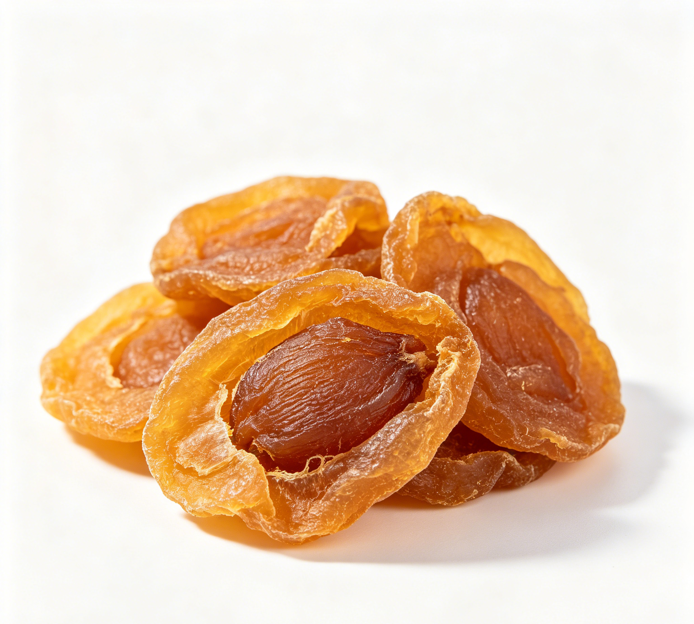

📋 基本信息
中文名龙眼肉（桂圆）
拉丁名Dimocarpus longan Lour.
英文名Longan Arillus
产地科：无患子科（Sapindaceae）；属：龙眼属（Dimocarpus）；拉丁学名：Dimocarpus longan Lour.。主产于广东、广西、福建、台湾，云南等地亦有栽培，以福建、台湾栽培最盛，广东次之。
性状本品为纵向破裂的不规则薄片，或呈囊状，长约1.5cm，宽2～4cm，厚约0.1cm。棕黄色至棕褐色，半透明。外表面皱缩不平，内表面光亮而有细纵皱纹。薄片者质柔润，囊状者质稍硬。气微香，味甜。【来源：《中国药典》2020年版一部】
用法用量9～15g。【来源：《中国药典》2020年版一部】
贮藏置通风干燥处，防潮，防蛀。【来源：《中国药典》2020年版一部】
☯ 传统属性
四气温
五味甘
归经心、脾经
功能主治补益心脾，养血安神。用于气血不足，心悸怔忡，健忘失眠，血虚萎黄。【来源：《中国药典》2020年版一部】
禁忌症内有痰火及湿滞停饮者忌服。【来源：《中华本草》】
毒性甘温助火，过量食用易致口干、咽痛、口疮、便秘等“上火”表现；含糖量高，过量不利于血糖控制；痰湿体质者多食易生痰碍胃。
适宜体质气虚质、平和质、阴虚质
适宜证型气虚证、脾胃气虚证、心脾两虚证、阴虚火旺证
🔬 现代研究
主要成分干果肉含可溶性成分约79.77%，主要有葡萄糖（约25%）、蔗糖、果糖等糖类，腺嘌呤、胆碱等含氮物质；尚含蛋白质（约5.6%）、脂肪、有机酸（以酒石酸计）、多种维生素（维生素B1、B2、C、P等）及多酚类、多糖类成分；灰分约3.36%。【来源：《中华本草》及公开科研文献整理】
药理作用（1）抑菌作用：水浸剂（1:2）在试管内对奥杜盎小芽胞癣菌有抑制作用，煎剂对痢疾杆菌有抑制作用。（2）抗衰老作用：提取液能选择性抑制小鼠离体脑B型单胺氧化酶（MAO-B）活性。（3）抗应激：可延长小鼠常压耐缺氧存活时间，减少低温下死亡率。另有抗焦虑、增强免疫功能等公开研究报道。【来源：《中华本草》及公开科研文献综述整理】
食疗功效补心脾、益气血、安心神，是传统补血安神类食药物质，常用于体虚乏力、失眠多梦、健忘心悸及产后血虚的膳食调养，如桂圆红枣汤、桂圆糯米粥等。
食养禁忌
🏭 产品形态与潜在功能
推荐形态
饮片粉末提取物
潜在功能